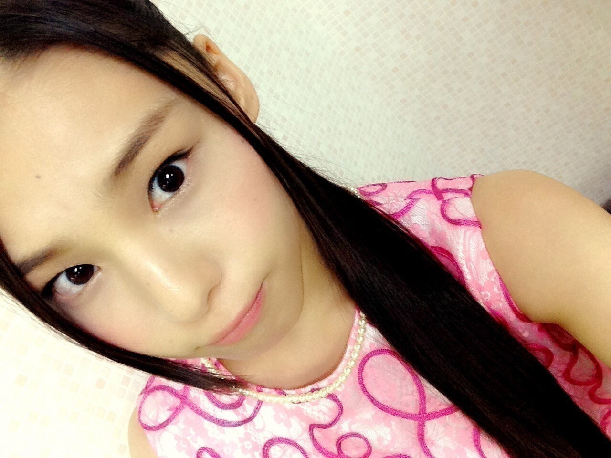
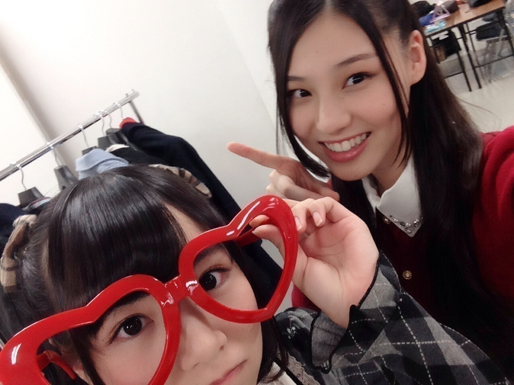
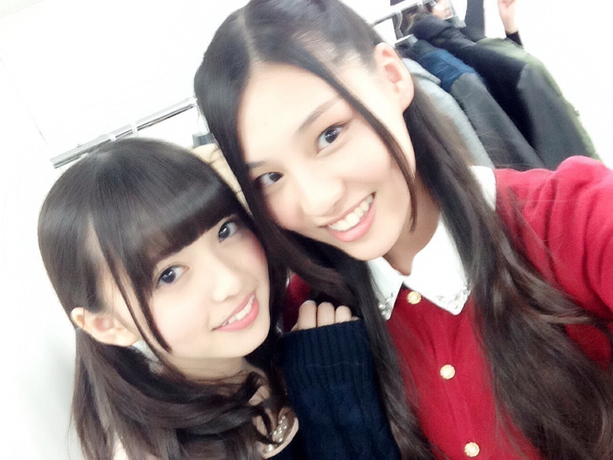

| 2014/12 13 Sat | (*いおり_(．．*)vol.17) |
みなさんこんばんはー！
高校2年生17歳
さがらいおりです！
昨日は
アンダーライブ
燃え尽きました、、
セカンドシーズンを
有明コロシアムで終えることができて
本当に嬉しかったです(>_<)！
今回は全員センターという企画で
1 人 1 曲センターに立って歌うことになって、
どの曲を歌うか抽選で決めたんですけど、
いおりはバレッタを
センターでやらせていただけました！！
バレッタをセンターで踊るのは2 回目で
1 回目はいおりが初めてみなさんの前でパフォーマンスをした
六本木ブルーシアターでした
あの時はまたセンターで踊れるなんて
思っても見なかったから
こんなに大きな会場で
たくさんのサイリウムの中で
もう 1 度センターで踊れたということが
とても嬉しかったし本当に感動しました( / _ ; )
カッコよくきめようと思ってたけど、
みなさんの「おーーーーっ」ていう声が聞こえたから
すんごいニヤけてたかも(。-∀-)♡
アンダーライブファイナルは
演出も豪華になって、
すごい緊張もしたけど、
とっても楽しかったです♪♪

相楽伊織という立場ではあるけれど、、、
アンダーライブで有明コロシアムを埋めることができて本当に嬉しかったし、
なにより有明コロシアムまで連れて行ってくれた皆さんに感謝してます( / _ ; )
ありがとうございました！！
まだまだ頑張ります！！
これからも応援よろしくお願いします(´,,•ω•,,)♡
そして今日は
クリスマスライブ初日
アンダーライブとは
立ち位置とかセットリストが
丸々違うから
ゼロから覚え直したり
リハーサルも同時進行だったから
頭の中がいっぱいいっぱいで、、
琴子に頼りっぱなしでした(>_<)
今までは部分的に違うだけだったけど、
初めて違うライブがかぶったから、
本当に大変で
でも皆さんがコメントで
楽しみにしてるよとか
全力で応援するからねって言ってくれたから
楽しんでもらいたいなーって思いで
なんとか昨日今日と乗り切れました！！
明日からは
今日失敗してしまったところを
ちゃんと出来るように
頑張りたいです♪♪
このライブが終わったら、
ひなとお揃いのノート
買おうねって話したの♪♪

ひにゃこ♡♡
もうこの顔可愛すぎでしょ♡♡
ホントに、、♡♡
ひなは可愛いですホントに♡♡
大好きです♡♡(*´`*)
えへ
このライブの期間で
ひなちまさんとか、飛鳥さんとかと
よく話すようになったんだよ♡♡

明日も頑張ります！！！
i o r i .

コメント(410)
2014/12/13 23:30